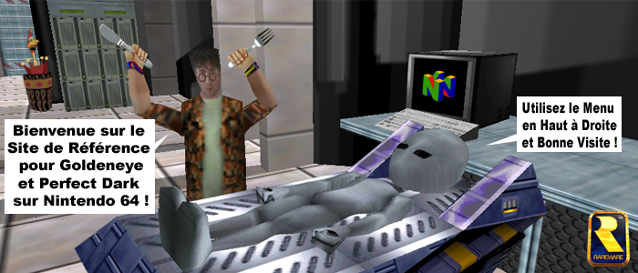

Cliquez ici pour le Menu !
> Présentations
> Soluces Mode Solo
> Multiplayer Battle Mode
> Codes / Cheat Options
> 30 Challenges
> Versions Beta
> Plein de Mysteres...
> Action Replay
> Jouer sur Emulateur
> The Complex !!!
> Autres Jeux
> Liens / Ailleurs
> Contacter Tim
.

Vous cherchez une N64 avec Goldeneye ou Perfect Dark ? Essayez ci-dessous !
Entrez les termes que vous recherchez.
Envoyer un formulaire de recherche